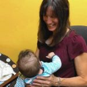

May 2019: “I’m Amazed by What They Do” (Chicago Tribune)
Bears’ Tarik Cohen and George McCaskey connect with Chicago men trying to reject gun violence. (Chicago Tribune)
March 31, 2019: Program gives next generation of barbers the skills, tools needed to start a career (WGN)
February 20, 2019: Restorative Justice Community Court Graduation (WGN)
January 20, 2019: Polar Peace March
This was the chant approximately 300 people marched to Jan. 20. on a day when temperatures fell below 20 degrees. The Polar Peace March lived up to its name. (Columbia Chronicle)
January 20, 2019: Polar Peace March WGN Coverage
On the eve of Martin Luther King Jr. Day, a Chicago church and nonprofit agency held a march through Lincoln Park to honor the civil rights activist’s legacy. (WGN 9)
December 23, 2018: Polar Peace March NBC5 News
December 4, 2018: 4th Annual Youth Peace Summit
Earlier this month, teens from across the city of Chicago came out to St. Paul’s United Church of Christ in the Lincoln Park neighborhood for UCAN’s fourth annual Youth Peace Summit. The daylong event held four peer-led workshops, which paved the way for conversations on diversity, mental health and leadership. (Free Spirit Media)
November 10, 2018: 4th Annual Youth Peace Summit
On Saturday, November 10, over 80 youth from across the city and 36 zip codes came together for the 4th annual Youth Peace Summit to share viewpoints and hear each other’s perspectives in hopes of cultivating a more cohesive and peaceful city. (ABC7 Chicago)
October 28, 2018: Peacehub Mini Grants Showcase
ABC7 visited UCAN headquarters on for our Peacehub showcase that highlighted what youth did with 15 privately funded mini-grants. (ABC7 Chicago)
October 28, 2018: UCAN Wants To Curb North Lawndale Violence
On the streets making up the 10th District, police have logged more than 140 shootings this year, and North Lawndale is doing what it can to put that violence in its rear-view mirror. (CBS Chicago)
October 24, 2018: To end gun violence in Chicago, should we focus on quick fixes or root causes? Yes.
The debate often is whether it’s more important to focus on immediate solutions or to take a longer view and address its root causes. A new survey shows that this is a false choice. (Crain’s Chicago Business)
June 8, 2018: In hopes of stopping bloodshed, a multimillion-dollar effort is providing jobs, therapy to city’s most violent
Heartland Alliance, whose efforts started up about nine months ago, has partnered with seven social service organizations, including UCAN and North Lawndale Employment Network, to create READI Chicago. (Chicago Tribune)
May 23, 2018: UCAN Hosts Successful Impact Youth Conference at Gary Comer Center
More than 500 Chicago youth and youth advocates convened to address the real-life challenges our youth face like violence and trauma at the 4th Annual Impact Youth Conference on May 11-12 at the Gary Comer Youth Center. (WGN-TV)
May 14, 2018: UCAN President/CEO Assists Foster Mother with Changing DCFS Regulations
When an 11 year old girl died, her grieving foster mom took on a fight that will forever change how DCFS responds when a young ward of the state passes away. Castleberry turned her anger into action, reaching out to the head of a private child welfare agency, Zack Schrantz. (CBS Chicago)
April 25, 2018: UCAN’s North Lawndale Campus Wins Neighborhood Development Award
The Chicago Neighborhood Development Awards recently named UCAN, a non-profit headquartered in North Lawndale, as this year’s recipient of the Richard H. Driehaus Foundation Award for Outstanding Non-Profit Neighborhood Real Estate Project (Chicago Citizen).
January 14, 2018: Chicago church holds march on eve of MLK day
{kind=link}
On the eve of Martin Luther King Jr. Day, a Chicago church led a march to honor the civil rights leader’s legacy and call for an end to the violence that has troubled the city (Chicago Tribune).
December 31, 2017: The 4th Annual Polar Peace March is previewed on NBC 5’s Making a Difference segment.

{kind=link}
September 30, 2017: ‘One child led to 132’: Hawthorn Woods couple finds spiritual rewards in foster care
Over the span of nearly 30 years as a foster parent, Vrenios, currently a UCAN foster parent, has become a pro tending to infants and children in the care of the state. Vrenios and her husband, Tom, so far have touched the lives of 132 kids, including two children the couple adopted into their own family. (Chicago Tribune)
September 12, 2017: UCAN’s Vice President of Violence Intervention and Prevention services sits down with Chicago Tonight.
An anonymous $12 million donation to the Ann & Robert H. Lurie Children’s Hospital will be used to treat child abuse, mental health issues and the direct and indirect effects of violence on Chicago’s youth. The violence prevention program within the social services nonprofit UCAN will be one of several organizations partnering with the hospital to make use of the donation. (Chicago Tonight)
August 31, 2017: UCAN Now Serving Students through Former Beacon Therapeutic Day School
Beacon Therapeutic Center, which for many years offered services to help at-risk youth on the south side, closed over the summer. Fortunately, UCAN, a social service agency providing many similar programs, was able to step in and take over and insure that the services provided at Beacon Therapeutic Day School continue at UCAN Academy. (BAPA.org)
July 21, 2017: New court to bring victims, offenders face-to-face to hash out resolutions

From Right: State Attorney Kim Foxx, Ald. Michael Scott Jr., Cook County Public Defender Amy Campanelli, Circuit Judge Colleen f. Sheehan, Chief Judge Tim Evans, Dr. Carolyn Vessel, Jose Wilson
A new Cook County court in the North Lawndale neighborhood on Chicago’s West Side aims to bring victims of nonviolent crime face-to-face with the offenders to hash out a resolution (Chicago Tribune).
The first of its kind in Illinois, [the Restorative Justice Community Court] will open Aug 31. The court will convene every Thursday in a conference room at UCAN. … Everyone — the defendant, victim, and judge — takes a seat at the same table to discuss the crime (Chicago Sun-Times).
It’s one of the chronic problems of the criminal justice system: a revolving door of repeat offenders shuttling back and forth between prison and neighborhood. Now, [the Restorative Justice Community Court] aims to break that cycle. It puts the community in charge of deciding what to do with offenders, and their victims. (Fox32 Chicago)
“This is truly the people’s court,” Cook County Circuit Court Judge Colleen Sheehan says. “The community has the power to determine how they heal from the harm of crime and conflict. It is the community that has the wisdom and humanity to do this. Every human being in every community wants safety and a sense of belonging. This court helps provide the structure and support so the community of North Lawndale can bring that healing home.” (Windy City Media Group)
Restorative justice courts not only offer closure to victims, but have major public safety and taxpayer benefits as well. Restorative justice could potentially save the state $1,561 per participant when compared to prison sentences. The state could also see cost savings from a reduction in recidivism. (Illinois Policy)
The Circuit Court of Cook County received a $200,000 grant from the U.S. Department of Justice Bureau of Justice Assistance to fund the court. It was one of 10 similar grants from the federal agency, totaling $2 million in assistance across the country. ” “The community and the system is so committed to the process, that after the grant has come and gone, we still anticipate continuing with the court.” (City Bureau)
Now open every Thursday, the court was designed so there’d be no separation between judge, court personnel and defendants—everyone sits around the same table. There are no jail cells where people await judgment, no one arrives in handcuffs, and everyone at the table introduces themselves before proceedings begin. Defendants are given time to ask questions and meet with their lawyers for legal counsel. There is no physical barrier blocking defendants from their family members and loved ones. (Chicago Defender – September 21st)
July 7, 2017: Beacon Therapeutic School Being Absorbed By UCAN
UCAN, which operates a therapeutic day school in Humboldt Park, has expanded to oversee the operation of Beacon Therapeutic Diagnostic and Treatment Center in Beverly. The nearly 100 students at Beacon Therapeutic’s two campuses will now fall under the umbrella of the UCAN Academy. Read the article here.
Youth speaking at Peace Conference ©Ozzie Ramsay Photography | ALL Rights Reserved 2017
May 2, 2017: Peace Hub Youth Conference Addresses Chicago Violence
Nearly 1,000 young adults and social service professionals are expected to attend a conference … to talk about the daily challenges of life in Chicago. Read more here.
May 2, 2017: WePlay Offers Safe Space, Community at Chicago at Chicago Children’s Museum
For 12 weeks, about eight teenage mothers and their children spent a few hours every other week at the Chicago Children’s Museum, eating lunch, playing and exploring the exhibits. Read here.
April 30, 2017: “Shaking the trees and making it rain for minority suppliers on the West Side.”
“The Doris Davenport Show” featured an hour-long live segment broadcast on Facebook with UCAN CEO Zack Schrantz and UCAN Executive Vice President Claude Robinson who detailed how the organization exceeded its minority supplier spending goal in the construction of UCAN’s Drost Harding Campus in North Lawndale. Watch here.
April 27, 2017: UCAN offers support for gun dealer licensing bill.
UCAN, along with the Joyce Foundation, Illinois Council Against Handgun Violence, and the Brady Campaign came together to boost support for a bill that holds corrupt gun dealers accountable. Check it out here.
April 20, 2017: UCAN’s high diversity standards for campus project highlighted in Crain’s Chicago Business.
UCAN created an opportunity to make some tough decisions, but our diversity standards are as high as the regard with which we hold the youth and families we serve. Read it here.
April 18, 2017: UCAN Summer Jobs Program participant highlighted as Speaker at Sen. Durbin’s press conference to announce support for at-risk youth.
Sen. Dick Durbin and Rep. Robin Kelly announced new legislation to increase access to employment opportunities for at-risk youth through the HERO for At-Risk Youth Act and the Creating Pathways for Youth Employment Act. Curtis Martin, featured at the press conference at the Chicago Urban League, is a participant in UCAN’s Summer Jobs & Beyond program. Watch it here.
April 18, 2017: Mayor Rahm Emanuel holds press conference on reducing gun violence at UCAN Headquarters.
Mayor Emanuel meets with youth served by UCAN Chicago and stands alongside local leaders to address the need for strong and sensible gun dealer licensing laws as a key part of reducing gun violence. Watch it here.
February 21, 2017: Chicago Tonight’s Maya Miller sat down with Patrick Daniels, youth development coach at UCAN.
Daniels discusses North Lawndale and how UCAN is working to help young men in the community avoid the pitfalls of gangs and gun violence. Check it out here.
February 4, 2017: Crain’s Chicago Business covers the Get In Chicago initiative and gives perspectives on why the program has not worked as intended.
UCAN CEO Zack Schrantz talks about the need for more funding to make an impact on a larger number of youth in North Lawndale. Read it here.
January 29, 2017: The Chicago Tribune’s Alexia Elejalde-Ruiz’s feature on the low job opportunities for Chicago youth
UCAN mentee, Darron Gunnings, speaks to the Tribune about the positive impact UCAN has made in his life. Continue reading here.
January 27, 2017: Sam Charles of the Chicago Sun-Times covers the high-rate of violence in Beat 1133 on Chicago’s West Side
UCAN Vice President of Violence Prevention and Intervention Services Norman Kerr speaks on how trauma, due to exposure to violence, has impacted the majority of the youth served by UCAN’s 360 Community program. Check it out here.
January 15, 2017: NBC 5 Chicago’s footage from the Polar Peace March
Christian Farr covers the Polar Peace March and speaks with St. Pauls UCC’s Reverend Matt Fitzgerald.
January 12, 2017: DNA Info Features the Polar Peace March.
Ted Cox interviews UCAN CEO Zack Schrantz about the 2017 Polar Peace March . Read the full article here.
January 6, 2017: NBC 5 Chicago’s pre-event coverage of the 2017 Polar Peace March.
LeeAnn Trotter talks with Polar Peace March founder, Jan Bail, about the how the origins of the event and St. Pauls connection with UCAN. Watch the interview here.
October 20 , 2016: ABC 7 Coverage of UCAN’s 360 Community Program
Leah Hope of ABC 7 sits down with UCAN staff and youth to discuss trauma and violence and what UCAN is doing to help young people. View the segment here: Read the full story here.
July 7, 2016: UCAN’s Move to North Lawndale Featured in the Chicago Sun-Times
The Chicago Sun-Times spoke with UCAN leadership and supporters regarding the potential impact the move will have on the community. Read the full story here.
July 7, 2016: ABC 7 Chicago Coverage of UCAN’s Ribbon Cutting
ABC 7 highlights UCAN’s move into the John D. and Alexandra C. Nichols Center in North Lawndale Read more here.
June 9, 2016: UCAN CEO Addresses Gun Violence with the Chicago Tribune
Tom Vanden Berk speaks on the city’s pervasive gun violence and his commitment to youth who’ve been traumatized by the violence. Read the full article here
June 8, 2016: Medium.com Covers UCAN’s Move Into North Lawndale
Claude Robinson, Vice President of External Affairs and Diversity speaks on UCAN’s focus to become part of the community, Read more here.
June 1, 2016: UCAN Vice President of Development and Government Affairs Speaks with Dan Profit and Illinois Policy
Fred Long and AE Marketing Group CEO talk violence prevention, education and opportunity in Chicago. Watch the video here
May 25, 2016: UCAN’s Vice President of Violence Prevention Speaks with On Point with Tom Ashbrook
Norman Kerr spoke with Tom Ashbrook from NPR’s On Point regarding predictive policing and how UCAN uses predictive measures to engage at-risk youth. Listen to the audio here
May 20, 2016: Hyde Park Herald Covers “Catalyst for Change” Panel Featuring Norman Kerr
UCAN’s Vice President of Violence Prevention Norman Kerr was a featured panelist in a discussion to address the mental health issues that youth face which contribute to violence in Chicago. Read the full article here
March 17, 2016: Crain’s Chicago Business Features UCAN Youth Leadership Awards Dinner Chair Ron Gidwitz
Ron Gidwitz speaks to Crain’s about his methods to help UCAN reach the fundraising goal for this year’s event Read the full case study here
March 14, 2016: AE Marketing Group’s Case Study on UCAN
AE Marketing Group digs into UCAN’s branding and marketing strategies. Read the full case study here
February 22, 2016: UCAN CEO Thomas Vanden Berk Announces Transition
CEO Thomas Vanden Berk Announces Transition to CEO Emeritus Role Effective July 2016. Read full press release here.
January 20, 2016: Spotlight on UCAN’s Teen Parenting Service Network Program
Page nine of the Chicago Defender highlights the story of Keisha, a UCAN youth, who received guidance through the TPSN program. Read full article here.
January 17, 2016: Polar Peace Coverage on NBC 5 Chicago
Live coverage of the Polar Peace March from NBC 5 Chicago.
January 13, 2016: Polar Peace March Preview
Preview of the 2nd Annual Polar Peace March by event sponsor NBC 5 Chicago. Read full article here.
2015
Sept 8, 2015: The Rooftops Project Feature
A behind the scenes and in-depth look at the key players within UCAN’s new campus construction and move to North Lawndale. Read the full article here.
August 8, 2015: Ribbon Cutting coverage
DNAinfo highlights why UCAN’s Therapeutic Youth Home will provide holistic services and become a resource for the North Lawndale community. Read the full article.
August 4, 2015: Therapeutic Youth Home Feature
UCAN’s President, Zack Schrantz, explains the importance of security, privacy, and healing in this Chicago Tribune Article. Click here to read more.
July 16, 2015: Youth Leadership Awards Dinner
Coverage of our 16th Annual Youth Leadership Awards Dinner appeared in the Sun-Times! Click here to view the article.
April 27, 2015: #Unforgotten Art Project
UCAN CEO Thomas Vanden Berk appeared in a video for the Unforgotten Art Project. He shared his own experience of loss with gun violence and his contribution to the project. Watch the video here.
April 10, 2015: The New (old) Sears Tower
UCAN is listed as one of the many organizations filling the old Sears tower in North Lawndale, now the John D. and Alexandra C. Nichols tower. Read the full article here.
March 12, 2015
UCAN President and CEO Tom VandenBerk’s letter to the editor was featured in the Sun-Times. Tom spoke on behalf of the agency to oppose eliminating needed services for 18-21 year old DCFS wards as has been proposed by the governor. Read the letter here!
March 6, 2015
UCAN youth and former Youth Leadership Award Winner Annie Audenas was featured in an article in the Chicago Tribune further highlighting the issues with the proposed elimination of funding to the over 18 years old foster care population in Illinois. Read the article here.
February 28, 2015
UCAN staff and former clients write an editorial in response to the proposed budget cuts, and how they would effect the system of care in Illinois. Read the article here.
January 18, 2015: Polar Peace March
UCAN supporters, member of the St. Pauls family, and advocates will march in solidarity with those – especially youth – who experience violence and its trauma throughout Chicago. This family-friendly event honoring the meory of Dr. King welcomes adults and children of all ages. Click here to see the video footage from WGN – Channel 9.
2014
UCAN youth gives back to the Chicago Community with the VING project, December 29, 2014.
UCAN youth was featured as one of the participants in the inaugural year of the VING project, which is dedicated to empowering youth by giving them the power to give back to those that have inspired them. Read the full article here.
Success of UCAN’s 15th Annual Youth Leadership Awards featured in Crain’s Chicago Business, June 11, 2014.
Lisa Bertagnoli, Crain’s reporter was inspired by UCAN’s “up and comers” highlighting the exciting awards and events of a truly successful fundraiser to support our mission. Click here to view the article.
UCAN’s Patrick Daniels explains the importance of UCAN’s work in Chicago People’s Voice, March 6, 2014
Patrick Daniels, a youth development coach with UCAN in North Lawndale, spoke about the importance of UCAN’s presence in Chicago and his passion for UCAN’s mission in a Chicago People’s Voice article. Click here to view the article
UCAN’s Norman Kerr quoted in MSNBC update of President Obama’s “My Brother’s Keeper” initiative, February 14, 2014
President Obama recently announced a new initiative to focus on the needs and well being of young men of color. Named “My Brother’s Keeper”, the initiative will draw on partnerships between foundations and businesses to provide a range of opportunities and strategies to help bolster their lives. Click here to read the full article.
UCAN mentioned in CBS coverage of Senator Dick Durbin visit, January 25, 2014
Senator Dick Durbin visited the Diermeier Future Leaders Now program site to observe the program and speak with a small group of youth about the issues impacting their lives. Please click here to read the CBS coverage.
2013
UCAN mentioned in Crain’s article on how to engage donors, November 25, 2013
UCAN was mentioned in a Crain’s article “Donor Management 101: How to give thanks.” The article talks about different Chicago nonprofits and their thoughtful ways of recognizing donors and supporters. Longtime UCAN supporters Jeff and Julie Diermeier are mentioned for the Diermeier Future Leaders Now program. Please click here to read the article.
UCAN mentioned in web article on the film ‘The Painter’, September 12, 2013
UCAN was mentioned as a participating non profit organization in this web article on the upcoming film ‘The Painter’. Kevin Cooper tackles the disturbing subject of how violence is robbing of our youth of innocence. Click here to read the article
UCAN’s Groundbreaking Ceremony for new Therapeutic Youth Home coverage in Channel 2 CBS Chicago, September 12, 2013
UCAN’s groundbreaking ceremony was mentioned on Channel 2 CBS Chicago. The ceremony included remarks from Deputy Governor Cristal Thomas, Alderman Michael Chandler, Commissioner Robert Steele, Senator Patricia Van Pelt and UCAN youth Chase Larkin and North Lawndale residents. Mayor Rahm Emanuel’s wife, Amy Rule was also present at the event. Click here to read the coverage.
UCAN mentioned in Fox32 news channel segment on Safe Passage for Chicago Public School children, September 3, 2013
UCAN was mentioned in a segment on Fox channel 32 coverage of ‘Safe Passage’ route for Chicago Public school children. UCAN is providing ten community watchers to ensure safe passage along routes to Hughes Elementary School. Click here to watch the segment.
UCAN one of 11 groups to receive funding for anti-crime project, mentioned in Crain’s article on Get In Chicago, June 27, 2013
UCAN is one of 11 groups receiving first round of funding for Mayor Rahm Emanuel’s anti-crime project. The Public Safety Action Committee, which is headed by Chicago business executives, will dole out $1.7 million to the nonprofits that will in turn mentor 3,000 young people and offer conflict resolution and job training. The business group has raised $41 million for the five-year project with a goal of at least $50 million. Click here to read more.
UCAN’s 14th Annual Youth Leadership Award Dinner mentioned in Splash, June 13, 2013
UCAN’s 14th Annual Youth Leadership Awards Dinner was featured in Splash article on the recently held Youth Leadership Award Dinner at Soldier Field. Click here to read more.
UCAN’s 14th Annual Youth Leadership Award Dinner mentioned in Crain’s, June 13, 2013
UCAN’s 14th Annual Youth Leadership Award Dinner was mentioned in Crain’s Chicago Business. The article mentions this year’s award winners and the honoring of John D. Nichols as this year’s UCAN Impact Awardee. Click here to read more.
UCAN’s 14th Annual Youth Leadership Award Dinner mentioned in this Modern Luxury events post, May 23, 2013
UCAN’s 14th Annual Youth Leadership Awards Dinner is mentioned in this Modern Luxury event posting, click here to read more. The Awards Dinner this year will be held at The United Club at Soldier Field on June 6th 2013. This year, Mr. John D. Nichols will be presented the John D. Nichols Impact Award and five exceptional young people will be recognized for their academic and personal achievement and receive scholarships for higher education.
UCAN’s CITY campus is featured in this Chicago Tribune article, May 6, 2013
UCAN CEO Tom Vanden Berk is featured in this Chicago Tribune article on UCAN’s new CITY campus. In the article Tom speaks about what CITY will do for the North Lawndale community. Please click here to read more.
UCAN’s CITY campus featured in Huffington Post article, March 30, 2013
UCAN’s CITY campus is featured in this Huffington Post article. The article describes UCAN’s new CITY campus as a “safe house” for youth and communities in the North Lawndale area. Click here to read more.
UCAN’s CITY campus featured in DNAinfo article on UCAN’s violence prevention efforts, March 30, 2013
UCAN’s CITY campus is described as a “safe house” in this DNAinfo article. The article describes UCAN’s new CITY campus including a football sized Therapeutic Youth Home and the model UCAN has created for violence prevention. Click here to read more.
UCAN featured in N’DGIO web article on Talented Team of Minority and Women-Owned firms Selected to Design and Build UCAN’s CITY campus, March 21, 2013
UCAN is featured in this N’DGIO web article on UCAN’s comittment to minority and women-owned firms and their involvement in the building of our new CITY campus. Click here to read more.
UCAN in WGN’s Chicago’s Very Own, March 20, 2013:
UCAN is featured in WGN’s episode of Chicago’s Very Own. This segment features UCAN youth, Cordell Smith and Jasmine Allen and UCAN CEO Tom Vanden Berk and CITY. Vice President Norman Kerr Please click here to view.
UCAN’s CITY Project mentioned in this Chicago Sun-Times article at the site of the former Sears Roebuck & Co. headquarters, March 19, 2013
UCAN’s new CITY project has been described as a $32 million youth-services campus in this Chicago Sun-Times article. The article quotes our CEO Tom Vanden Berk and Governing Board Chair Judith C. Rice Click here to read more.
UCAN mentioned in DNAinfo.com Chicago article about the production of short film, “The Painter”, February 5, 2013
UCAN was mentioned in this web article on short film “The Painter” written and directed by Kevin Cooper. Executive Vice President External Affairs & Diversity Claude Robinson and Chief Development Officer Barbara Stone are both quoted in the article. Please click here to read more.
UCAN’s Vice President CITY Norman Kerr on Fox’s The O’Reilly Factor, February 4, 2013
UCAN’s Vice President CITY project Norman Kerr appeared on The O’Reilly Factor with radio host Matt McGill. Norman talked about how gun violence affects youth in Chicago. Click here to see the video clip.
UCAN CEO mentioned in Chicago Tribune featuring parents who have lost children to Chicago’s rampant gun violence, February 3, 2013
UCAN’s CEO Tom Vanden Berk talks about the loss of his son Tommy Vanden Berk in 1992 in this article in the Chicago Tribune featuring parents who have lost children to Chicago’s rampant gun violence. Please click here to read more.
UCAN’s CEO Tom Vanden Berk mentioned in Arlington Heights Patch on Gun Panel for Reasonable Gun Control, February 1, 2013
UCAN’s CEO Tom Vanden Berk particpated in a round table panel hosted by Congressman Rep. Brad Schneider. Particpants included Wheeling Police Chief William Benson, North Chicago Mayor Leon Rockingham, Executive Director Family First Center of Lake County and gun owner Skip Robertson. Please click here to read more.
UCAN’s Vice President CITY project Norman Kerr quoted in this msnbc article on Chicago honor student who was shot a week after she performed at President’s inauguration, January 30, 2013
A week after performing at President Obama’s inauguration, Hadiya Pendleton was gunned down in a park in Chicago. UCAN’s Vice Presdient CITY project Norman Kerr is quoted in this msnbc article talking about youth and violence. Please click here to read more.
UCAN CEO Tom Vanden Berk quoted in The Daily Northwestern at a Evanston Martin Luther King Day event, January 24, 2013
Tom Vanden Berk was the keynote speaker at the annual celebration, called Diverse Evanston Walks United, to give youth in the community an opportunity to speak out against violence. The event featured singing, slam poetry and breakdance interwoven with video clips of interviews with youth on violence prevention. Please click here to read more.
2012
UCAN’s Tom Vanden Berk, Norman Kerr and youth Cordell Smith mentioned in MSNBC article on Rising Toll of Gun Violence in Chicago, December 20, 2012
Read more about UCAN’s Therapeutic Youth Home young person Cordell Smith in this interesting article on the rising toll of gun violence in Chicago. CEO Tom Vanden Berk and Vice President CITY project Norman Kerr are also quoted. Please click here to read the article in full.
The Chicago Sun Times, UCAN CEO Tom Vanden Berk referenced in column on appeal of the conceal and carry law, December 20 2012
UCAN’s CEO Tom Vanden Berk is mentioned in this article on the appeal of the conceal and carry law in the state of Illinois. The article also mentions Illinois Attorney General Lisa Madigan. Please click here to read more.
The Sacramento Bee, 360° Model Named a Mutual of America 2012 Community Partnership Award Winner, November 20, 2012
UCAN’s 360° Model was named as a Mutual of America 2012 Community Partnership Award Winner this last week. The Mutual of America Community Partnership Award annually honors the outstanding contributions that 10 nonprofit organizations, in partnership with public, private and other social sector organizations, make to society. Please click here to read more and here to read an article covering the award in the Sacramento Bee.
UCAN featured in ICOY web article on rising Gun Violence numbers in November
UCAN was featured in this article on ICOY’s website. UCAN’s CEO Thomas Vanden Berk and Vice President CITY Norman Kerr comment on gun violence in lieu of the recent upsurge in homicide numbers in Chicago. Please click here to read more.
Roosevelt University student newspaper features UCAN’s Pamela Wilson in this article on University students mentoring UCAN youth, October, 29, 2012
This Torch article features Roosevelt University Psychology students who recently visited UCAN’s Therapeutic Youth Home to mentor UCAN youth. Pamela Wilson, UCAN’s Therapeutic Youth Home recreational coordinator talks about the home and how youth are provided therapy treatment plans. Please click here to read the article in full.
Examiner.com, UCAN’s Project Visible Man program mentioned in article featuring Chicago tactical efforts to end gun violence, September 25, 2012
The Examiner.com featured UCAN’s Project Visible Man program as one the youth initiatives working to end gun violence in Chicago. The article describes the program as one that focuses on providing support and resources to children who have been exposed to violence, abuse and neglect. Please click here to read the article in full.
CBS Channel 2 Chicago, UCAN event mentioned in news piece covering students who were honored for participating in anti-violence programs, September 10, 2012
CBS Chicago covered the “Youth for More Safer and Caring Communities 2012 Youth/Adult Partnership Day” at the South Side Community Art Center that was hosted jointly by UCAN, Target Corp., the city of Chicago Mayor’s Office and other youth-focused community organizations on Saturday September 8th 2012. The event showcased youth-led violence prevention projects that were successfully implemented this past summer in Chicago. Click here to read more.
ABC WLS-TV Chicago News, UCAN event mentioned as part of coalition hoping to stop Chicago violence, September 9, 2012
ABC News covered the UCAN and Target Corp. event “Youth for More Safer and Caring Communities 2012 Youth/Adult Partnership Day” at the South Side Community Art Center. Supt. Garry McCarthy, Cook County State’s Attorney Anita Alvarez, and Felicia Davis Executive Director of the City of Chicago’s Office of Public Engagement were present among others to applaud the impressive list of youth-led violence prevention projects that were successfully implemented this past summer in Chicago. Click here to read more.
The Chicago Tribune, UCAN event commemorates youth-led summer anti-violence campaign, September 8, 2012
UCAN in partnership with Target Corp., the City of Chicago Mayor’s Office and other youth-focused community organizations, hosted the “Youth for More Safer and Caring Communities 2012 Youth/Adult Partnership Day” at the South Side Community Art Center. Supt. Garry McCarthy was at the event and talked about gun violence in Chicago. Click here to read more.
The Council for Health and Human Service Ministries News, September 4, 2012
UCAN’s Director of Spiritual Formation Rev. Tyrone Fowlkes is featured in this CHHSM news article about positive experiences helping youth become aware of identity, purpose and service to others. Click here to read more.
The Chicago Tribune, CEO Tom Vanden Berk’s letter to the editor, August 5, 2012
UCAN’s CEO Tom Vanden Berk’s letter to the editor on “Gun Ownership” appeared in The Chicago Tribune’s Voice of the People. Please click here to read more
Youth Today features UCAN staff member Bonnie Wade in an article on homelessness and LGBTQ youth in Chicago, August 2, 2012
Bonnie Wade, Associate Director of UCAN’s LGBTQ Host Home program was interviewed by Youth Today on the growing issue of homeless LGBTQ youth in the Chicago area. Please click here to read more.
Catalyst Chicago features UCAN staff members Michael Wilson and Denise Gray-Bunkley in an article on youth and trauma, June 18, 2012
Denise Gray-Bunkley Director of Clinical Counseling Services (CCS) and Michael Wilson Clinical Supervisor for (CCS ) were mentioned in this Catalyst Chicago article on students who witness shootings, lose a parent or experience other trauma and how therapy can help them. Please click here to read more.
The Chicago Crusader features UCAN and Trinity United Church of Christ 3-on-3 basketball classic, June 16, 2012
UCAN is featured in this article covering the fifth annual basketball classic at Lowden Homes. The article mentions how churches like Trinity UCC and social services organizations like UCAN can collaborate on events like these to encourage community building. Please click here to read more.
Chicago Tribune features a video from Chicago Bear Brandon Marshall’s visit to UCAN Academy, May 21st, 2012
>This video posted on the Chicago Tribune Youtube channel features Brandon Marshall being interviewed during this recent UCAN Academy visit on May 16th, 2012. See video here.
Chicago Sports Network features a video from Chicago Bear Brandon Marshall’s visit to UCAN Academy, May 16th, 2012
Brandon was interviewed by the media at UCAN Academy, he then visited with students as well as Project Visible Man participants and spoke about leadership and his therapeutic experiences. See CSN’s video interview here.
Chicago Bears website features story on wide receiver Brandon Marshall’s visit to UCAN Academy, May 16th, 2012
Brandon spoke with UCAN Academy students and Project Visible Man participants during his visit – read more here.
BroadwayWORLD.com Chicago mentions LGBTQ Host Home Program benefit: The Neo-Futurists’ Pride Weekend Presents 30 Queer Plays in 60 Straight Minutes, May 9th, 2012
This year’s Neo-Futurists annual Pride Weekend benefit: 30 Queer Plays in 60 Straight Minutes features favorite queer-sexuality and gender bending themed plays from the past year. UCAN’s LGBTQ Host Home Program is this year’s chosen beneficiary. Please click here to read more.
UCAN’s 2012 Teen Gun Survey: Local Efforts to Save our Children-N’DIGO Weekly Magapaper, May 3rd-9th, 2012
UCAN’s 2012 Teen Gun Survey was covered in this special feature on teens and guns in the N’DGIO weekly magapaper. Please click here to read more.
UCAN’s 2012 Teen Gun Survey: 44% of teens can easily obtain handguns-The Inquisitr, April 19th, 2012
UCAN just released the 2012 Teen Gun Survey results at a press conference featuring UCAN youth, Cook County Commissioner Robert Steele, representatives of the Office of the Mayor, Chicago Police Department, and Office of the Cook County State’s Attorney, and Reverend Robin Hood. The survey findings and the press conference were covered in this >article in The Inquisitr.
UCAN’s 2012 Teen Gun Survey reveals that 44% of teens could get a handgun if they wanted to-WBEZ 91.5, April 18, 2012
UCAN just released the 2012 Teen Gun Survey results at a press conference featuring UCAN youth, Cook County Commissioner Robert Steele, representatives of the Office of the Mayor, Chicago Police Department, and Office of the Cook County State’s Attorney, and Reverend Robin Hood. The press conference was covered in this WBEZ 91.5 article and news piece.
UCAN chosen for CHA Housing Opportunity and Services Together (HOST) Program, March 2012
UCAN is partnering with the Chicago Housing Authority (CHA) to test the innovative HOST Program in Altgeld Gardens. This unique two year pilot effort uses housing as a platform for services to improve the life chances of vulnerable children, youth and adults. To download an article about HOST by the Urban Institute, please click here.
The Chicago Tribune, February 2, 2012
UCAN STAR Christopher Williams is featured in this Tribune article. Chris shares his story of growing up in the Illinois child welfare system and talks about UCAN’s STARS program. Click here to read the article.
2011
UPN’s Perspective with Monique Caradine, December 25th, 2011
On Christmas day UCAN’s very own Claude Robinson and Chase Larkin appeared on Perspective. Claude and Chase spoke about UCAN’s holiday toy drive efforts, our CITY initiative, and how people can get involved and support UCAN. Watch the program by clicking here. (Please note that UCAN’s segment begins around the 17 minute mark)
Windy City Times, December 21, 2011
Associate Director of UCAN’s Host Home Program Bonnie Wade participated in a LGBT breakfast hosted by State Rep. Ann Williams on December 12th. Bonnie along with others brought pressing issues to William’s attention including anti-bullying policies and same-sex protection. Read more about the event by clicking here
Windy City Times, November 9, 2011
UCAN’s LGBTQ Host Home program is featured in this Windy City Times article titled, UCAN confronts LGBT homelessness. The article features Bonnie Wade, Associate Director of the LGBTQ Host Home program and a UCAN LGBTQ Host Home graduate who talks about how the program helped him. Click here to read the article.
The Chicago Tribune, July, 21, 2011
UCAN CEO Tom Vanden Berk’s editorial “Our violent ways: Chicago police Superintendent Garry McCarthy was right about lax gun laws harming black teens” is featured. Click here to read this powerful article.
Windy City Live, July, 21, 2011
UCAN is featured on Windy City Live as entrepreneur Jodi Norgaard presents a donation of dolls to our organization. Watch the clip here!
Crain’s Chicago Business, June 1, 2011
Crain’s lists UCAN’s 12th Annual Youth Leadership Awards Dinner as one of the upcoming events to attend in June! Please click here to read the story.
CHHSM United Church of Christ News, May 31, 2011
UCAN’s Director of Spiritual Formation Reverend Tyrone Fowlkes and his work is highlighted in this piece by CHHSM, please click here to read this fascinating article.
Windy City Times, April 27, 2011
The Windy City Times highlights UCAN’s LGBTQ Host Home Program Click here to read the story.
Streetwise, April 13-19, 2011
Streetwise examines the topic of homeless youth in Chicago, and features UCAN’s LGBTQ Host Home program. Click here to read the issue.
2010
Illinois Department on Aging, September 2010
Illinois Department on Aging Honors Older Workers and Their Employers During Annual Awards Luncheon. Two of UCAN’s Foster Grandparents were honored. To read the story, click here.
NBC 5 Chicago, October 2, 2010
UCAN’s Teen Gun Survey Statistics are featured in this “Education Nation” segment. To view the story, click here.
GovMonitor, July 26, 2010
UCAN’s President & CEO Tom Vanden Berk is named to Governor Pat Quinn’s newly formed Illinois Anti-Violence Commission. To read the article, click here.
eNews Park Forest, July 23, 2010
U.S. Senator Dick Durbin (D-IL) today announced that the Senate Appropriations Committee has approved $4,000,000 for projects in the state of Illinois in the Commerce, Justice and Science spending bill. This includes $450,000 in funding to provide UCAN’s 360° Model in AUSL’s schools in the North Lawndale and Austin communities of Chicago. To read the article, click here.
Lake County News-Sun, July 22, 2010
Agencies split health-care funding from Healthcare Foundation of Northern Lake County. UCAN received $40,000 to help fund its High Risk Infant Program in northern Lake County. To read the article, please click here.
Ebony, August 2010
“Stop killing our dreams”: Part one of this three-part series on youth violence focuses on Chicago, where 216 young people were murdered during the first 11 months of 2009. UCAN EVP Claude Robinson is quoted and UCAN’s Project Visible Man program is highlighted as one of the city’s solutions to this issue. To read the article, pleas click here.
Windy City Times, June 23, 2010
“11th Annual 30 Under Thirty Honors”: Meakose Edmond, UCAN LGBTQ Host Home Program Advisory Council member, is named to this distinguished list. Click here to see his profile.
Windy City Times, June 23, 2010
“Let’s take PRIDE in our youth”. Click here to read an editorial by Malaundja Gayles, one of UCAN’s LGBTQ Host Home Program< youth volunteers.
Univision, June 14, 2010
“UCAN ayuda a jóvenes a lograr estudios” Click here to view Univision’s coverage of UCAN’s High School to College program.
Reminisce, April/May 2010
Former UCAN Residential Treatment Center client Robert Schaeffer reminisces about his time living in UCAN’s residential home. Click here to read the article.
The Chicago Crusader, March 6, 2010
“Youth demand action on gun violence” UCAN teens along with IL State Senator Trotter and Congressman Quigley speak at the UCAN Teen Gun Survey news conference on Chicago’s gun violence problem and what soluctions we can accomplish as a community. Click here to see the printed article.
Chicago Tribune, March 2, 2010
“Chicago’s handgun ban in spotlight” Chicago teens Eddie Bland, Monica Sanders and Briana Brooks from UCAN’s Hands Without Guns speak at the UCAN Teen Gun Survey news conference on March 1st. Click here to see the printed article and photo.
Chicago Sun-Times, March 2, 2010
“‘It was divine design,’ Chicago grandfather tells why he’s lead plaintiff in case that sets sights on city’s handgun law. Statistics from UCAN’s Teen Gun Survey are quoted. Click here to view the article.
Chicago Red Eye, March 2, 2010
“Supreme Question: Chicago’s handgun ban under the high court’s microscope”. UCAN teen Monica Sanders talks about her experience with gun violence, and statistics from UCAN’s Teen Gun Survey are quoted. Click here to see the article.
ABC 7 Chicago, March 1, 2010
UCAN launches the results of its 2009 Teen Gun Survey, accompanied by Congressman Michael Quigley (IL-5) and Senator Donne Trotter (17th District). Alarmed by increasing gun violence in their neighborhoods and schools, Chicago teens asked local, state and national policymakers to help keep them safe. The latest national Teen Gun Survey revealed that more than one in four teens know someone who has been shot – and more than one in three teens fear being shot someday. Click here to view ABC 7’s news coverage.
Univision, March 1, 2010
“Jóvenes dicen no a las armas de fuego; Exigen más control sobre su venta.” Click here to view Univision’s news coverage of UCAN’s Teen Gun Survey
2009
Crain’s Chicago Business, December 28, 2009
2010 Book of Lists, Wednesday, June 9th: UCAN, 2010 Youth Advocacy Awards Dinner. Four Seasons Hotel Chicago. Click here for full 2010 Book of Lists.
ESPN, December 28, 2009
For the Bears’ last home game of the season, one of UCAN’s youth was chosen to go down on the field and watch the opening coin toss. Click here for photos.
British Consulate-General Newsroom, December 10, 2009
UCAN STARS visit the Consulate-General to learn more about its work, career skills and job interview tips. Click here for full article.
Chicago Tribune, December 9, 2009
“Students fight youth violence; say neither gunplay nor bullying should be tolerated at school”. UCAN’s second annual Urban Suburban Youth Summit on Gun Violence took place December 5th at George Westinghouse College Prep High School, where youth came together to build solutions to address Chicago’s violence. “Our kids are living in dangerous times,” said UCAN spokeswoman Jodi Doane. “It’s not an anomaly any more for them to know someone who has been shot. We want violence prevention programs out in the community. The young people have the ideas, and we have to get adults to the table to support them.” Click here for full article.
Café Magazine, November/December 2009
Fostering Hope: More Latino families are urged to open up their hearts and homes to foster children in need. UCAN foster parent Miriam Martinez speaks about her experience with four foster children, and the need for more Latino foster families is discussed. Click here for full article.
Windy City Times, November 4, 2009
Group focuses on housing for LGBT youth. Read this article for more information on UCAN’s LGBTQ Host Home Program and its progress. Click here for full article.
Trib Local, Oak Park/River Forest, September 23, 2009
LGBTQ Host Home Program Launches – Looking for Oak Park individuals to become Hosts! Click here for full article.
Fox TV News, June 29, 2009
It seems everyone has a story of how they’re struggling in this economy. Because of possible budget cuts, foster kids in Illinois could be at a greater disadvantage than ever before. UCAN clients Kenyale Medley-Woods and DeShawn Johnson share their experiences in the foster care system and with UCAN. Click here to view more.
Crain’s Chicago Business, June 8, 2009
CEO Tom Vanden Berk writes a letter to the editor responding to an article on gun violence against Chicago youth.
ABC 7 News, June 4, 2009
The State of Illinois says hundreds of teenagers will be matched with summer jobs thanks to federal stimulus money. Listen to UCAN CEO Tom Vanden Berk speak about how jobs can keep young people off the streets, out of trouble and away from violence, and hear from some youth that UCAN has helped to learn job skills. Click here to view more.